The first step was exploring and structuring the data (shown) in class. After I had a feel for the attributes I would be working with and their values, I actually began modeling out the data and picking through what was important and what wasn’t.
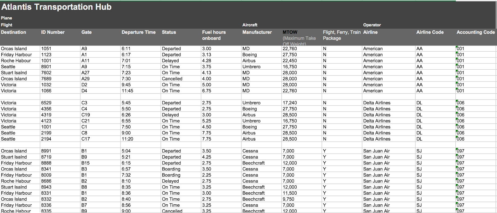
For example, "Destination" is a pretty important attribute, while "Maximum Takeoff Weight" is probably less relevant to the users. After determining what data was valuable and what was not, I began modeling that data out on paper, sketching out groupings of information.
Once I got a feel for the data I would be working with, I was introduced to my users and stakeholders. I summarized their needs and mapped specific data and ways to display data to the individuals with whom will be using this display.
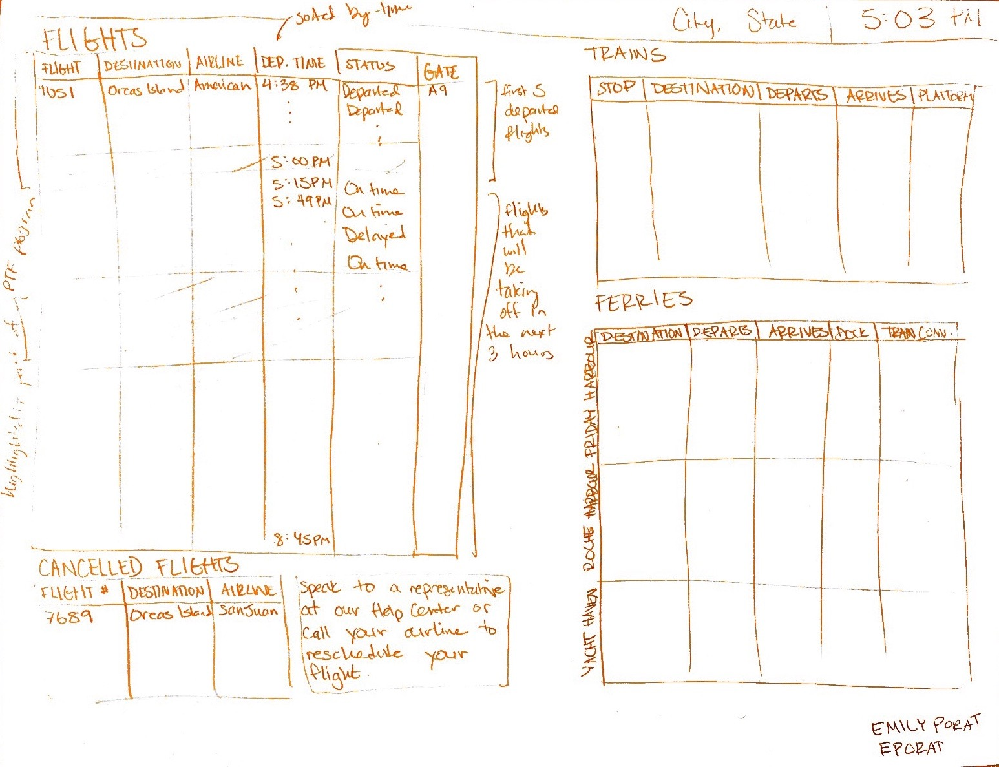
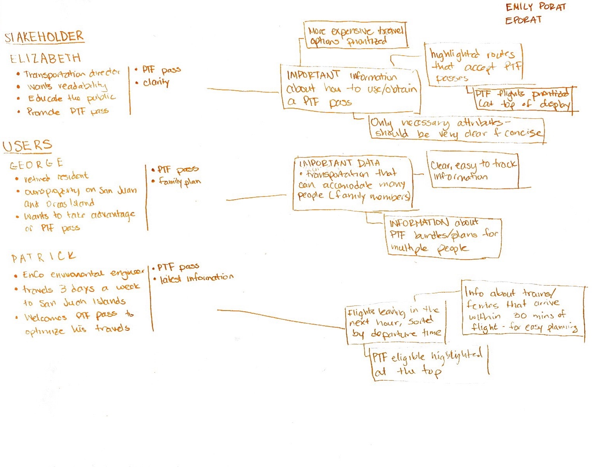
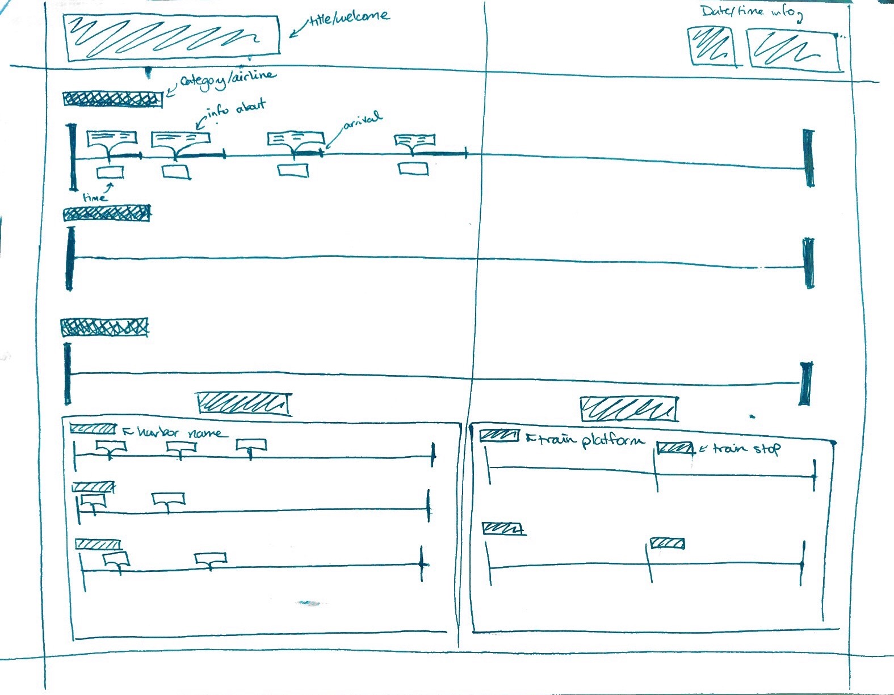
This was my initial idea, and I liked it because it gave at-a-glance information for every mode of transport. However, it didn’t really address the PTF pass and it also can only hold 30-40 data points at a time, which, combined, made this initial sketch a deal breaker.
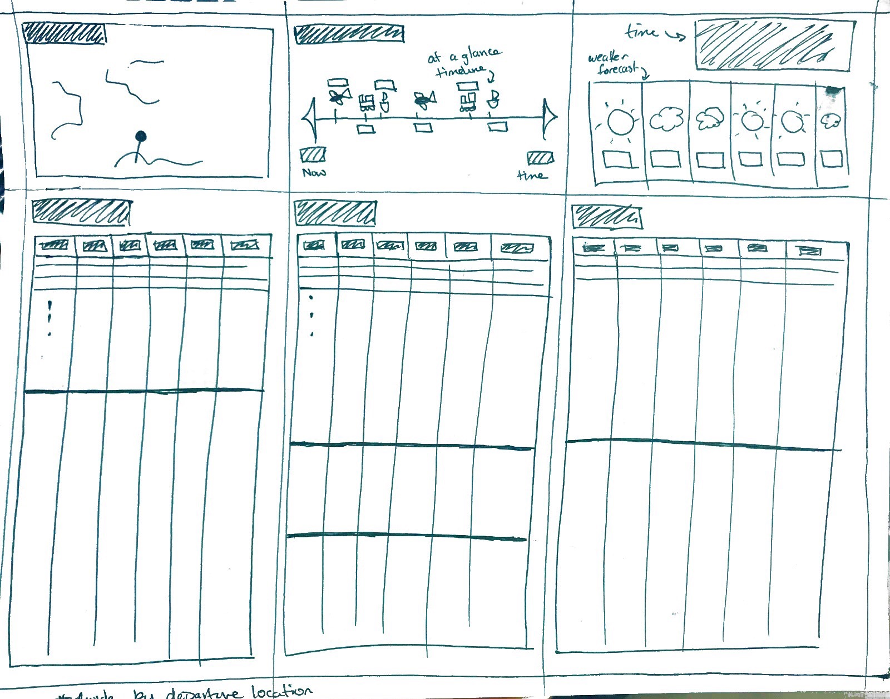
My second idea took a more classic approach by utilizing tables, but I also added extra information panels along the top. I liked the timeline idea, so I added a small timeline to this design, and I also added a map and weather data, relevant information I thought travelers might find useful.
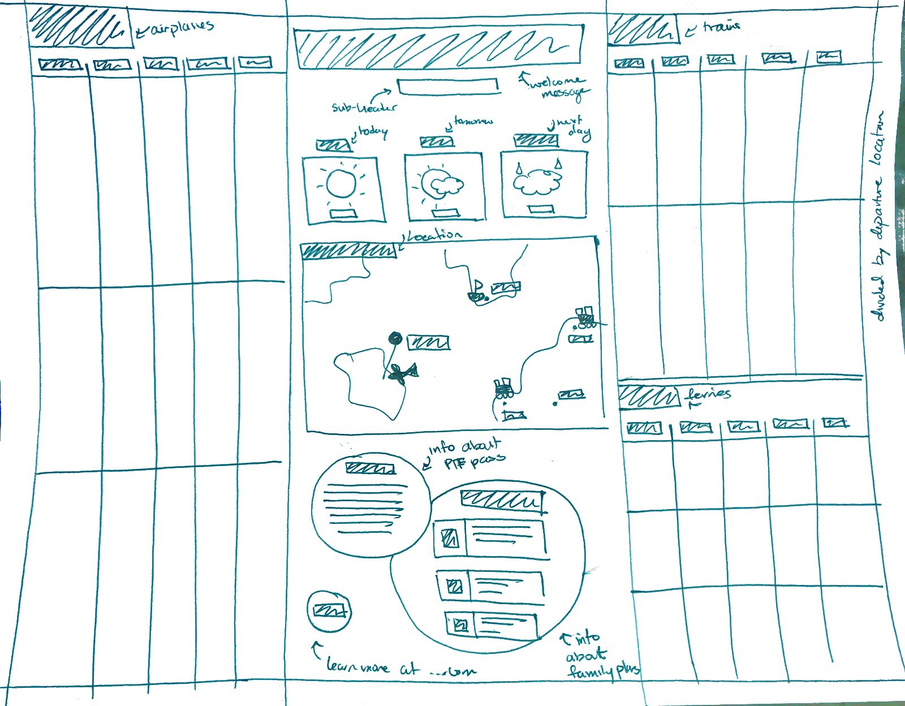
My final design reused elements from the second design, but arranged them in what I think is a clearer and more visually appealing manner. I shortened the weather portion to three days of information, added a section at the bottom regarding the PTF pass (which I would later remove), and sized the data tables accordingly.
This was my initial idea, and I liked it because it gave at-a-glance information for every mode of transport. However, it didn’t really address the PTF pass and it also can only hold 30-40 data points at a time, which, combined, made this initial sketch a deal breaker.
My second idea took a more classic approach by utilizing tables, but I also added extra information panels along the top. I liked the timeline idea, so I added a small timeline to this design, and I also added a map and weather data, relevant information I thought travelers might find useful.
My final design reused elements from the second design, but arranged them in what I think is a clearer and more visually appealing manner. I shortened the weather portion to three days of information, added a section at the bottom regarding the PTF pass (which I would later remove), and sized the data tables accordingly.
After selecting the third design as the one with which I would move forward, the next step was transforming the sketch into a digital design. I started this process with simple boxes and lines.
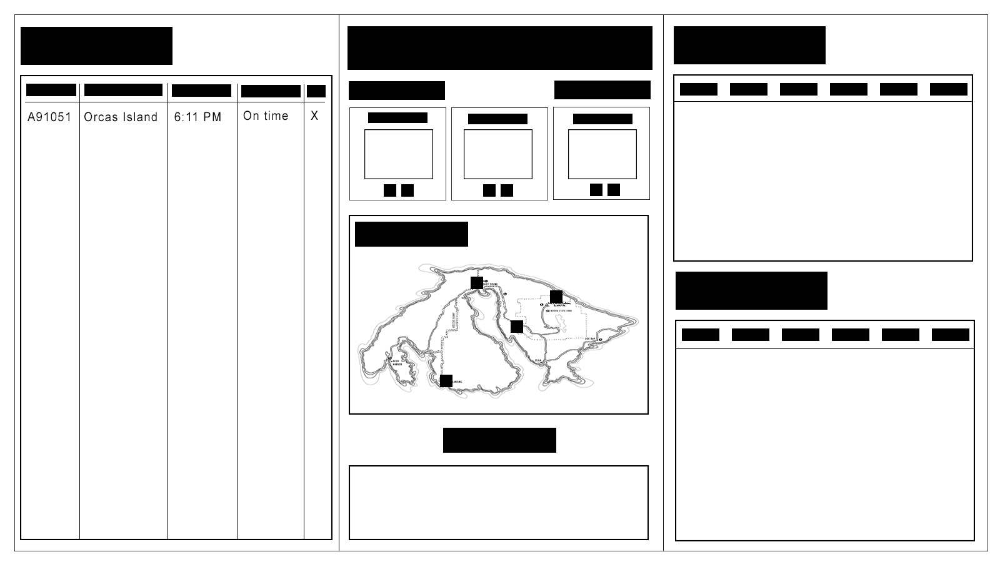
Next, I started experimenting with typography, color, and filling in the middle section. Initally, I started pulling colors from an arbitrary map I chose. However, I later created a map to better align with a cleaner, more purposeful color scheme (below).
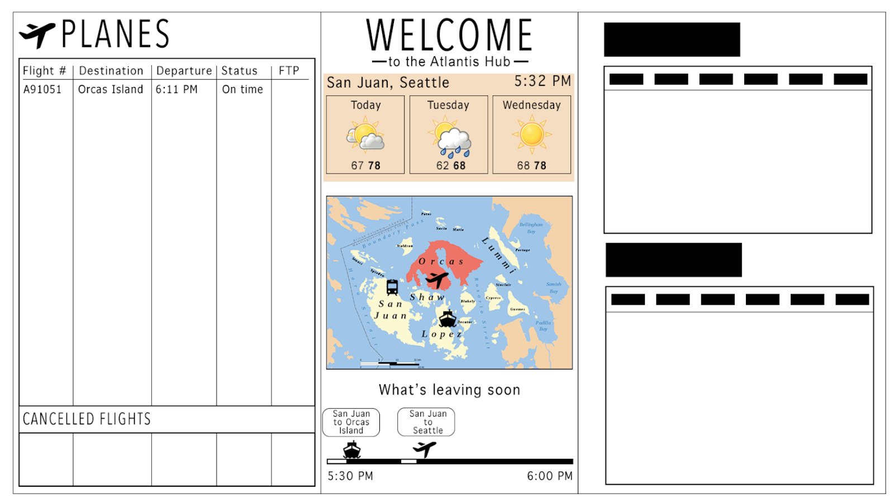
After filling in more data, I chose the following color scheme. I chose to use different hues of blue because it is a calming and professional color. It has more depth than a simple black background, but white text will still be easy to read against it.
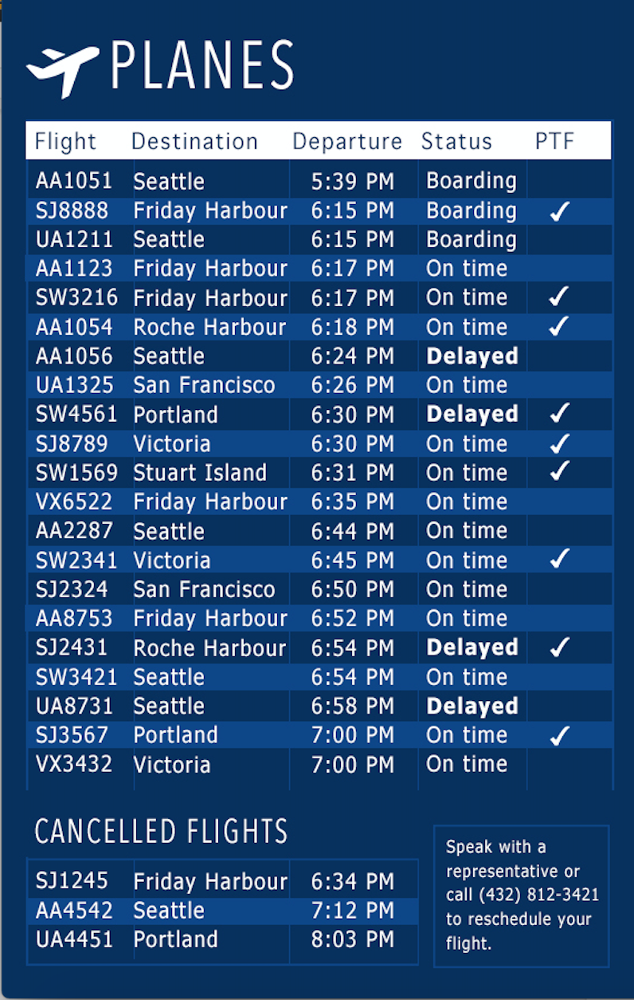
1) PTF eligible flights are highlighted with a check mark.
2) Cancelled flights are in a separate section so the user can quickly and easily see if their flight has been cancelled rather than scanning through the enitre table to try to find it.
3) Delayed flights are highlighted for the same reason.
4) Extraneous information is left out.
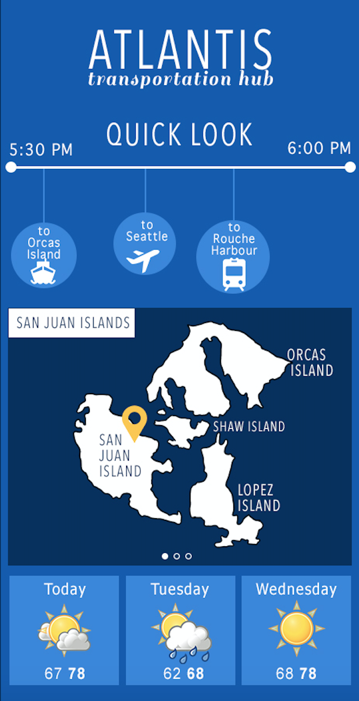
1) The timeline allows for quick and easy lookup of the next ferry, plane, and train.
2) The map is clear and easy to read. It oscillates between nearby islands and gives more information on each screen.
3) The three dots at the bottom of the map provide feedforward to the users.
4) The weather is highlighted but at the bottom of the screen, so people can focus on the more time-sensitive information.
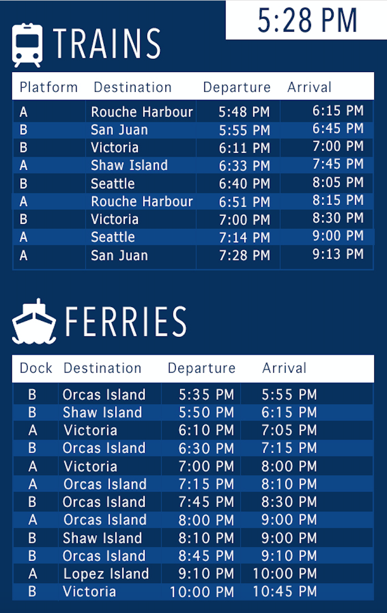
1) Like the first panel, table format provides easy-to-read information.
2) Every other row is highlighted for ease of use.
3) Current time is highlighted in the corner.
4) Icons are used for easy identification of transport methods.
GitHub
Facebook